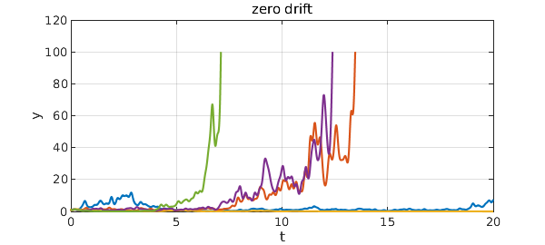
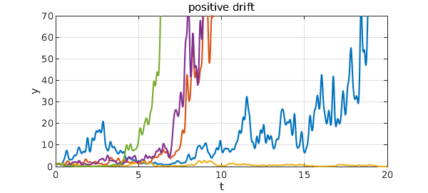
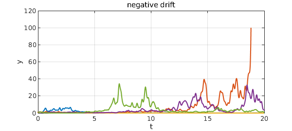

Random ODEs and stochastic DEs may include additive noise and/or multiplicative noise. A linear, constant-coefficient equation of the latter kind is the equation of geometric Brownian motion, $$ dX_t = \mu X_t dt + \sigma X_t dW_t, ~~~ (1) $$ where $W_t$ is the Wiener process (Brownian motion). With Chebfun's smooth random functions the analogous equation is $$ y' = \mu y + \sigma f y, ~~~ (2) $$ where $f$ is a smooth random function. As usual, $f$ will have a wavelength parameter $\lambda>0$, and the SDE limit corresponds to $\lambda \to 0$. Actually in this limit one will get a Stratonovich (rather than Itô) SDE, written $$ dX_t = \mu X_t dt + \sigma X_t \circ dW_t, ~~~ (3) $$
$\mu$ is called the drift coefficient and $\sigma$ is the diffusion (or sometimes volatility) coefficient.
Geometric Brownian motion is easy to analyze by taking the logarithm. For example, dividing (2) by $y$ gives $$ (\log y)' = \mu + \sigma f , $$ which now involves just additive noise.
For example, here are five trajectories with $\mu = 0$ and $\sigma = 1$. On a log scale there would be no bias up or down, but on a linear scale we see some large amplitudes.
tic
dom = [0,20]; L = chebop(dom); L.lbc = 1; L.maxnorm = 100;
rng(0), lambda = 0.2;
LW = 'linewidth'; FS = 'fontsize';
f = randnfun(lambda,dom,'norm',5);
mu = 0; sigma = 1;
for k = 1:5
L.op = @(t,y) diff(y) - mu*y - sigma*f(:,k)*y;
y = L\0; plot(y,LW,2.5), hold on
end
grid on, hold off
xlabel('t',FS,32), ylabel('y',FS,32)
title('zero drift',FS,32)

If we increase $\mu$ to $0.2$, there is now an upward bias on any scale.
mu = 0.2;
for k = 1:5
L.op = @(t,y) diff(y) - mu*y - sigma*f(:,k)*y;
y = L\0; plot(y,LW,2.5), hold on
end
grid on, hold off, ylim([0 70])
xlabel('t',FS,32), ylabel('y',FS,32)
title('positive drift',FS,32)

Setting $\mu = -0.2$, on the other hand, leads to decay.
mu = -0.2;
for k = 1:5
L.op = @(t,y) diff(y) - mu*y - sigma*f(:,k)*y;
y = L\0; plot(y,LW,2.5), hold on
end
grid on, hold off
xlabel('t',FS,32), ylabel('y',FS,32)
title('negative drift',FS,32)

total_time_in_seconds = toc
total_time_in_seconds = 19.895776000000001